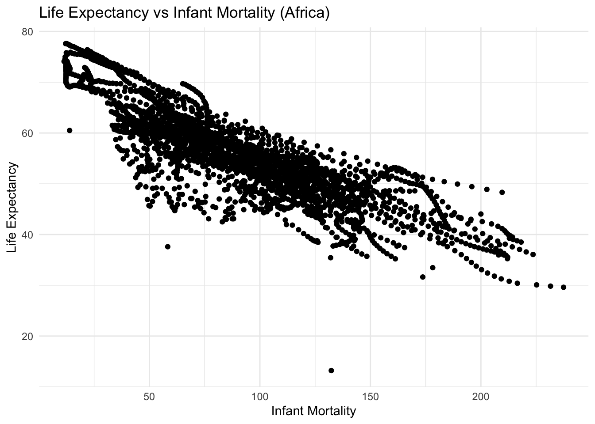
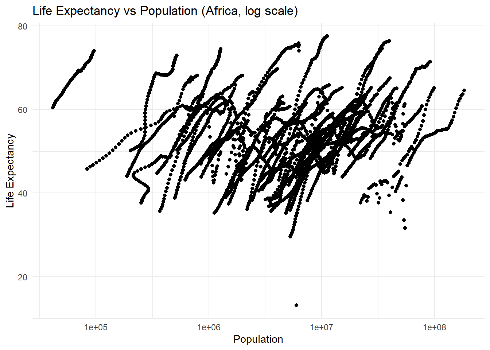
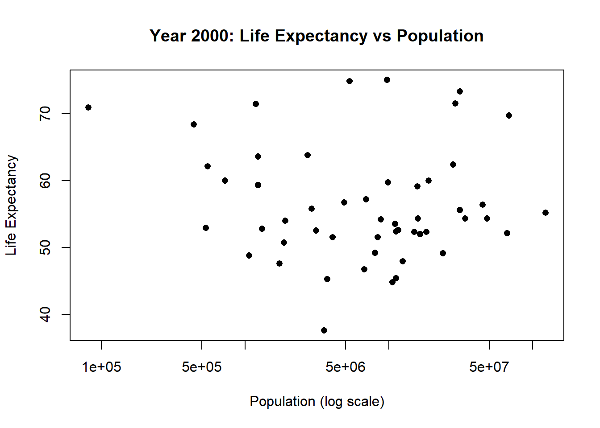
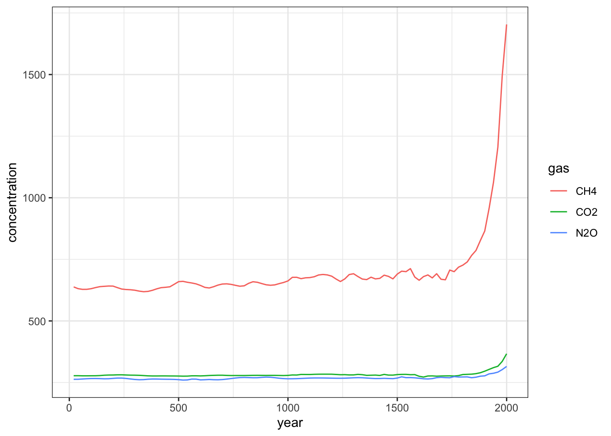
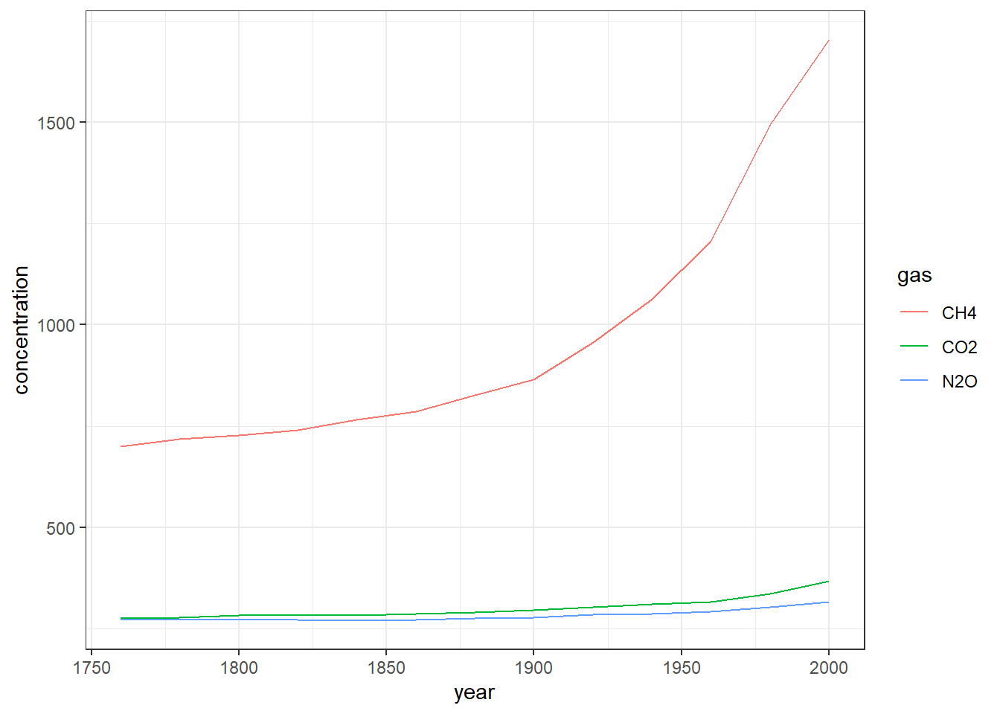

# Load package
# install.packages("dslabs") # run once if not installed
library(dslabs)
library(ggplot2) Warning: package 'ggplot2' was built under R version 4.3.3# Load the dataset
data("gapminder")For this assignment we must download the dslabs package containing the gapminder dataset. Loading the package and dataset will ensure that all functions and data are correctly available.
# Load package
# install.packages("dslabs") # run once if not installed
library(dslabs)
library(ggplot2) Warning: package 'ggplot2' was built under R version 4.3.3'data.frame': 10545 obs. of 9 variables:
$ country : Factor w/ 185 levels "Albania","Algeria",..: 1 2 3 4 5 6 7 8 9 10 ...
$ year : int 1960 1960 1960 1960 1960 1960 1960 1960 1960 1960 ...
$ infant_mortality: num 115.4 148.2 208 NA 59.9 ...
$ life_expectancy : num 62.9 47.5 36 63 65.4 ...
$ fertility : num 6.19 7.65 7.32 4.43 3.11 4.55 4.82 3.45 2.7 5.57 ...
$ population : num 1636054 11124892 5270844 54681 20619075 ...
$ gdp : num NA 1.38e+10 NA NA 1.08e+11 ...
$ continent : Factor w/ 5 levels "Africa","Americas",..: 4 1 1 2 2 3 2 5 4 3 ...
$ region : Factor w/ 22 levels "Australia and New Zealand",..: 19 11 10 2 15 21 2 1 22 21 ... country year infant_mortality life_expectancy
Albania : 57 Min. :1960 Min. : 1.50 Min. :13.20
Algeria : 57 1st Qu.:1974 1st Qu.: 16.00 1st Qu.:57.50
Angola : 57 Median :1988 Median : 41.50 Median :67.54
Antigua and Barbuda: 57 Mean :1988 Mean : 55.31 Mean :64.81
Argentina : 57 3rd Qu.:2002 3rd Qu.: 85.10 3rd Qu.:73.00
Armenia : 57 Max. :2016 Max. :276.90 Max. :83.90
(Other) :10203 NA's :1453
fertility population gdp continent
Min. :0.840 Min. :3.124e+04 Min. :4.040e+07 Africa :2907
1st Qu.:2.200 1st Qu.:1.333e+06 1st Qu.:1.846e+09 Americas:2052
Median :3.750 Median :5.009e+06 Median :7.794e+09 Asia :2679
Mean :4.084 Mean :2.701e+07 Mean :1.480e+11 Europe :2223
3rd Qu.:6.000 3rd Qu.:1.523e+07 3rd Qu.:5.540e+10 Oceania : 684
Max. :9.220 Max. :1.376e+09 Max. :1.174e+13
NA's :187 NA's :185 NA's :2972
region
Western Asia :1026
Eastern Africa : 912
Western Africa : 912
Caribbean : 741
South America : 684
Southern Europe: 684
(Other) :5586 [1] "data.frame"str ( ) will show structure
summary ( ) will give descriptive stats for each variable we have
class ( ) will tell us our object type
# Subset African countries
africadata <- gapminder[gapminder$continent == "Africa", ]
str(africadata)'data.frame': 2907 obs. of 9 variables:
$ country : Factor w/ 185 levels "Albania","Algeria",..: 2 3 18 22 26 27 29 31 32 33 ...
$ year : int 1960 1960 1960 1960 1960 1960 1960 1960 1960 1960 ...
$ infant_mortality: num 148 208 187 116 161 ...
$ life_expectancy : num 47.5 36 38.3 50.3 35.2 ...
$ fertility : num 7.65 7.32 6.28 6.62 6.29 6.95 5.65 6.89 5.84 6.25 ...
$ population : num 11124892 5270844 2431620 524029 4829291 ...
$ gdp : num 1.38e+10 NA 6.22e+08 1.24e+08 5.97e+08 ...
$ continent : Factor w/ 5 levels "Africa","Americas",..: 1 1 1 1 1 1 1 1 1 1 ...
$ region : Factor w/ 22 levels "Australia and New Zealand",..: 11 10 20 17 20 5 10 20 10 10 ... country year infant_mortality life_expectancy
Algeria : 57 Min. :1960 Min. : 11.40 Min. :13.20
Angola : 57 1st Qu.:1974 1st Qu.: 62.20 1st Qu.:48.23
Benin : 57 Median :1988 Median : 93.40 Median :53.98
Botswana : 57 Mean :1988 Mean : 95.12 Mean :54.38
Burkina Faso: 57 3rd Qu.:2002 3rd Qu.:124.70 3rd Qu.:60.10
Burundi : 57 Max. :2016 Max. :237.40 Max. :77.60
(Other) :2565 NA's :226
fertility population gdp continent
Min. :1.500 Min. : 41538 Min. :4.659e+07 Africa :2907
1st Qu.:5.160 1st Qu.: 1605232 1st Qu.:8.373e+08 Americas: 0
Median :6.160 Median : 5570982 Median :2.448e+09 Asia : 0
Mean :5.851 Mean : 12235961 Mean :9.346e+09 Europe : 0
3rd Qu.:6.860 3rd Qu.: 13888152 3rd Qu.:6.552e+09 Oceania : 0
Max. :8.450 Max. :182201962 Max. :1.935e+11
NA's :51 NA's :51 NA's :637
region
Eastern Africa :912
Western Africa :912
Middle Africa :456
Northern Africa :342
Southern Africa :285
Australia and New Zealand: 0
(Other) : 0 The task at hand is to focus only on data from Africa. This will restrict the data for our focus subset.
# Subset 1: Infant Mortality & Life Expectancy
life_infant <- africadata[, c("life_expectancy", "infant_mortality")]
str(life_infant)'data.frame': 2907 obs. of 2 variables:
$ life_expectancy : num 47.5 36 38.3 50.3 35.2 ...
$ infant_mortality: num 148 208 187 116 161 ... life_expectancy infant_mortality
Min. :13.20 Min. : 11.40
1st Qu.:48.23 1st Qu.: 62.20
Median :53.98 Median : 93.40
Mean :54.38 Mean : 95.12
3rd Qu.:60.10 3rd Qu.:124.70
Max. :77.60 Max. :237.40
NA's :226 # Subset 2: Population & Life Expectancy
life_pop <- africadata[, c("life_expectancy", "population")]
str(life_pop)'data.frame': 2907 obs. of 2 variables:
$ life_expectancy: num 47.5 36 38.3 50.3 35.2 ...
$ population : num 11124892 5270844 2431620 524029 4829291 ... life_expectancy population
Min. :13.20 Min. : 41538
1st Qu.:48.23 1st Qu.: 1605232
Median :53.98 Median : 5570982
Mean :54.38 Mean : 12235961
3rd Qu.:60.10 3rd Qu.: 13888152
Max. :77.60 Max. :182201962
NA's :51 This is to create subsets for analysis within our already designated subset of Africa. We have two specific relationships of interest.
Life expectancy vs. infant mortality
Life expectancy vs. population
ggplot(africadata, aes(x = infant_mortality, y = life_expectancy)) +
geom_point() + # scatter plot points
labs(title = "Life Expectancy vs Infant Mortality (Africa)",
x = "Infant Mortality",
y = "Life Expectancy") +
theme_minimal() # clean visual styleWarning: Removed 226 rows containing missing values or values outside the scale range
(`geom_point()`).
This allows us to generate a scatterplot to show the relationship between life expectancy and infant morality in African countries.
ggplot(africadata, aes(x = population, y = life_expectancy)) +
geom_point() + # scatter plot points
scale_x_log10() + # log-scale for population
labs(title = "Life Expectancy vs Population (Africa, log scale)",
x = "Population",
y = "Life Expectancy") +
theme_minimal() # clean visual styleWarning: Removed 51 rows containing missing values or values outside the scale range
(`geom_point()`).
Now we can examine the relaionshio between population size and life expectancy. However, we log-scale the x-axia, ‘x’, due to population variability. This scaling will improve the readability of our graph visual.
'data.frame': 51 obs. of 9 variables:
$ country : Factor w/ 185 levels "Albania","Algeria",..: 2 3 18 22 26 27 29 31 32 33 ...
$ year : int 2000 2000 2000 2000 2000 2000 2000 2000 2000 2000 ...
$ infant_mortality: num 33.9 128.3 89.3 52.4 96.2 ...
$ life_expectancy : num 73.3 52.3 57.2 47.6 52.6 46.7 54.3 68.4 45.3 51.5 ...
$ fertility : num 2.51 6.84 5.98 3.41 6.59 7.06 5.62 3.7 5.45 7.35 ...
$ population : num 31183658 15058638 6949366 1736579 11607944 ...
$ gdp : num 5.48e+10 9.13e+09 2.25e+09 5.63e+09 2.61e+09 ...
$ continent : Factor w/ 5 levels "Africa","Americas",..: 1 1 1 1 1 1 1 1 1 1 ...
$ region : Factor w/ 22 levels "Australia and New Zealand",..: 11 10 20 17 20 5 10 20 10 10 ... country year infant_mortality life_expectancy
Algeria : 1 Min. :2000 Min. : 12.30 Min. :37.60
Angola : 1 1st Qu.:2000 1st Qu.: 60.80 1st Qu.:51.75
Benin : 1 Median :2000 Median : 80.30 Median :54.30
Botswana : 1 Mean :2000 Mean : 78.93 Mean :56.36
Burkina Faso: 1 3rd Qu.:2000 3rd Qu.:103.30 3rd Qu.:60.00
Burundi : 1 Max. :2000 Max. :143.30 Max. :75.00
(Other) :45
fertility population gdp continent
Min. :1.990 Min. : 81154 Min. :2.019e+08 Africa :51
1st Qu.:4.150 1st Qu.: 2304687 1st Qu.:1.274e+09 Americas: 0
Median :5.550 Median : 8799165 Median :3.238e+09 Asia : 0
Mean :5.156 Mean : 15659800 Mean :1.155e+10 Europe : 0
3rd Qu.:5.960 3rd Qu.: 17391242 3rd Qu.:8.654e+09 Oceania : 0
Max. :7.730 Max. :122876723 Max. :1.329e+11
region
Eastern Africa :16
Western Africa :16
Middle Africa : 8
Northern Africa : 6
Southern Africa : 5
Australia and New Zealand: 0
(Other) : 0 Some data years have inconsistent data or missing data. Therefore, we will focus on the year 2000 for a cleaner read.
plot(year2000$population, year2000$life_expectancy,
xlab="Population (log scale)",
ylab="Life Expectancy",
main="Year 2000: Life Expectancy vs Population",
log="x", pch=16)
We will use simple linear models to see if life expectancy can be predicted from infant mortality or population size in the year 2000.
# Life Expectancy ~ Infant Mortality
fit1 <- lm(life_expectancy ~ infant_mortality, data=year2000)
summary(fit1)
Call:
lm(formula = life_expectancy ~ infant_mortality, data = year2000)
Residuals:
Min 1Q Median 3Q Max
-22.6651 -3.7087 0.9914 4.0408 8.6817
Coefficients:
Estimate Std. Error t value Pr(>|t|)
(Intercept) 71.29331 2.42611 29.386 < 2e-16 ***
infant_mortality -0.18916 0.02869 -6.594 2.83e-08 ***
---
Signif. codes: 0 '***' 0.001 '**' 0.01 '*' 0.05 '.' 0.1 ' ' 1
Residual standard error: 6.221 on 49 degrees of freedom
Multiple R-squared: 0.4701, Adjusted R-squared: 0.4593
F-statistic: 43.48 on 1 and 49 DF, p-value: 2.826e-08# Life Expectancy ~ Population
fit2 <- lm(life_expectancy ~ population, data=year2000)
summary(fit2)
Call:
lm(formula = life_expectancy ~ population, data = year2000)
Residuals:
Min 1Q Median 3Q Max
-18.429 -4.602 -2.568 3.800 18.802
Coefficients:
Estimate Std. Error t value Pr(>|t|)
(Intercept) 5.593e+01 1.468e+00 38.097 <2e-16 ***
population 2.756e-08 5.459e-08 0.505 0.616
---
Signif. codes: 0 '***' 0.001 '**' 0.01 '*' 0.05 '.' 0.1 ' ' 1
Residual standard error: 8.524 on 49 degrees of freedom
Multiple R-squared: 0.005176, Adjusted R-squared: -0.01513
F-statistic: 0.2549 on 1 and 49 DF, p-value: 0.6159Life_expectancy ~ infant_mortality tells us the relationship between life expectancy and infant mortality
life_expectancy ~ population will show the relationship between country size and life expectancy
summary ( ) will provide our descriptive statistics
The dataset chosen for this section is greenhouse_gases (Greenhouse gas concentrations over 2000 years).
'data.frame': 300 obs. of 3 variables:
$ year : num 20 40 60 80 100 120 140 160 180 200 ...
$ gas : chr "CO2" "CO2" "CO2" "CO2" ...
$ concentration: num 278 278 277 277 278 ... year gas concentration
Min. : 20 Length:300 Min. : 260.0
1st Qu.: 515 Class :character 1st Qu.: 269.7
Median :1010 Mode :character Median : 279.7
Mean :1010 Mean : 416.2
3rd Qu.:1505 3rd Qu.: 641.0
Max. :2000 Max. :1703.4 [1] "data.frame"[1] "CO2" "CH4" "N2O" [1] 20 40 60 80 100 120 140 160 180 200 220 240 260 280 300
[16] 320 340 360 380 400 420 440 460 480 500 520 540 560 580 600
[31] 620 640 660 680 700 720 740 760 780 800 820 840 860 880 900
[46] 920 940 960 980 1000 1020 1040 1060 1080 1100 1120 1140 1160 1180 1200
[61] 1220 1240 1260 1280 1300 1320 1340 1360 1380 1400 1420 1440 1460 1480 1500
[76] 1520 1540 1560 1580 1600 1620 1640 1660 1680 1700 1720 1740 1760 1780 1800
[91] 1820 1840 1860 1880 1900 1920 1940 1960 1980 2000It looks like this dataset only has three variables: year, gas, and concentrations. Specifically, this dataset contains concentration values of three greenhouse gases (carbon dioxide CO2, methane CH4 and nitrous oxide N2O) from year 20 to 2000.
It also looks like there aren’t any missing values in this dataset.
Let’s take a quick look at how these gases change over time.
ggplot(greenhouse_gases, aes(x=year, y=concentration, group=gas))+
geom_line(aes(color=gas))+
theme_bw()
Gas concentrations seemed to have shot up at some point past 1500. Using historical context, let’s take a look at the numbers only from 1760-2000 (from the beginning of the industrial revolution).
#Subset the data from 1500-2000
greenhouse_gases1 <- greenhouse_gases[greenhouse_gases$year >= 1760 & greenhouse_gases$year <= 2000,]
#Check the subset
str(greenhouse_gases1)'data.frame': 39 obs. of 3 variables:
$ year : num 1760 1780 1800 1820 1840 1860 1880 1900 1920 1940 ...
$ gas : chr "CO2" "CO2" "CO2" "CO2" ...
$ concentration: num 276 278 283 283 284 ... year gas concentration
Min. :1760 Length:39 Min. : 269.6
1st Qu.:1820 Class :character 1st Qu.: 280.4
Median :1880 Mode :character Median : 302.6
Mean :1880 Mean : 516.2
3rd Qu.:1940 3rd Qu.: 733.0
Max. :2000 Max. :1703.4 The 1500-2000 subset now has 39 observations as opposed to the original dataset with 300. Let’s create the same graph as before, but now using this new subset.
ggplot(greenhouse_gases1, aes(x=year, y=concentration, group=gas))+
geom_line(aes(color=gas))+
theme_bw()
Focusing on methane, let’s create a simple linear model to determine whether how its concentration was compared with time.
#Filter CH4
greenhouse_gases2 <- greenhouse_gases1[greenhouse_gases1$gas == "CH4",]
#Use lm function to fit CH4 concentration as the outcome and year as the predictor
fit3 <- lm(concentration ~ year, data=greenhouse_gases2)
summary(fit3)
Call:
lm(formula = concentration ~ year, data = greenhouse_gases2)
Residuals:
Min 1Q Median 3Q Max
-173.37 -121.21 -51.33 116.74 300.93
Coefficients:
Estimate Std. Error t value Pr(>|t|)
(Intercept) -5879.402 1089.379 -5.397 0.000218 ***
year 3.641 0.579 6.288 5.93e-05 ***
---
Signif. codes: 0 '***' 0.001 '**' 0.01 '*' 0.05 '.' 0.1 ' ' 1
Residual standard error: 156.2 on 11 degrees of freedom
Multiple R-squared: 0.7824, Adjusted R-squared: 0.7626
F-statistic: 39.54 on 1 and 11 DF, p-value: 5.933e-05CH4 concentration is strongly positively associated with year (3.641, p=5.93e-05). For each year that went by, CH4 concentration increased by 3.6 units.